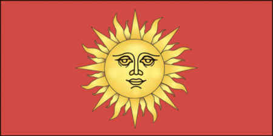

История города
Светлогорск — один из молодых и динамично развивающихся городов Гомельской области. Он был основан в середине XX века и вырос вместе с промышленным потенциалом региона. Сегодня Светлогорск — это не только крупный промышленный центр, но и уютный город для жизни с развитой инфраструктурой и зелёными улицами. Здесь проходят культурные и спортивные мероприятия, город активно благоустраивается, появляются новые общественные пространства. В окрестностях можно встретить живописные леса и водоёмы, которые привлекают любителей отдыха на природе. Светлогорск сочетает в себе индустриальную мощь и спокойный ритм провинциального города, сохраняя при этом гостеприимную атмосферу и открытость для новых возможностей.
Как добраться
Добраться до города Светлогорск в Беларуси можно несколькими способами. На автомобиле из Минска до Светлогорска около 150 километров, что занимает примерно 2-3 часа в зависимости от трафика. Основные маршруты включают трассы М5 и М10. Также можно воспользоваться железнодорожным транспортом: поезда из Минска до Светлогорска отправляются с Центрального вокзала и прибывают на железнодорожную станцию в Светлогорске, время в пути составляет около 3-4 часов. Регулярные автобусные рейсы из Минска отправляются с Центрального автовокзала и прибывают на автовокзал в Светлогорске, занимая примерно 3 часа. Еще один вариант — такси, что будет быстрее, но дороже; заказ можно сделать через приложения или по телефону.
Герб: В красном поле испанского щита изображено золотое солнце.

Флаг: Прямоугольное полотнище красного цвета с соотношением сторон 1:2, в центре лицевой стороны которого изображена гербовая эмблема – солнце желтого цвета.
Светлогорск – один из самых молодых городов Беларуси, был основан в 1961 г. Населённый пункт на его месте известен с XVI в. как деревня Шотилковичи (позже Шатилки) в Речицком повете Великого княжества Литовского, которая не имела собственного герба.
До принятия современного герба в Светлогорске существовала гербоподобная эмблема, выполненная в духе советской символики – Прометей как символический образ упорного сопротивления творческого мыслителя неблагоприятной судьбе. Обнажённая фигура титана из греческой мифологии была изображена с факелом в руке на фоне двух косых красно-зелёных полос. В гербе было размещено также название города и дата его основания, что противоречит классическим законам составления территориальной геральдики.
Разработка нового герба велась с начала 1999 г. Идея была подсказана председателем Светлогорского горисполкома Б.К. Пирштуком. Автор исходил из названия города: его светлое, «солнечное» название решено было отобразить в гербе в виде Солнца. В геральдике Солнце является символом, относящимся к разряду «естественных фигур», подразряду «светила, стихии», и символизирует свет, богатство, изобилие. Изображается этот знак в виде круга с человеческим лицом, окружённый попеременно прямыми и извилистыми лучами. Из исторических аналогов герб с изображением Солнца был у Подольского воеводства. Золотое изображение Солнца в геральдике всегда, как правило, сочетается с красным цветом.
Флаг был сконструирован на основе гербовой эмблемы с использованием тех же эмали и металла.
Изображение герба и флага были утверждены решением Светлогорского городского Совета депутатов от 28 июня 2000 г. № 41, положения о них – городским исполнительным комитетом 27 сентября 2000 г. № 531.
Автор герба Б.К. Пирштук, автор флага С.Е. Рассадин.
Светлогорский район расположен на севере Гомельской области и занимает площадь в 1,8 тыс.кв.км. Граничит со Жлобинским, Речицким, Калинковичским, Октябрьским районами Гомельской области и Могилевской областью на севере района. Основан 17 июля 1924 г. В район входят городской поселок Сосновый бор, 101 сельский населённый пункт, 9 сельсоветов. Население Светлогорского района составляет 76,7 тыс.чел. Административный центр — город Светлогорск с населением 63 тыс.чел. Расположен в 100 км от Гомеля.
Светлогорск известен с XVI века как деревня Шатиловичи (позднее Шатилки) в Речицком повете Великого княжества Литовского.
С 1793 года находился в составе России, в Паричской волости Бобруйского уезда.
С 1924 года Шатилки — центр сельсовета в Паричском районе, один из центров лесосплава на Березине.
С 1956 года — городской посёлок.
С 1960 года — центр Паричского района.
С 1961 года — город Светлогорск.
Район расположен в Гомельском Полесье.
Высшая точка района - 160 м - возле д.Круки.
Из полезных ископаемых есть нефть, каменная соль, торф, пески, глины, суглинки.
Средняя температура января -6.6 С, июля 18.4 С.
За год выпадает 602 мм осадков.
Из рек по территории района протекают Березина с притоками Ола, Свердь и Ипа с Вишей.
Созданы мелиоративные каналы, Светлогорское водохранилище.
Лесистость 54%. В районе находятся заказники республиканского значения: биологический Чирковичский, часть ландшафтного Выдрица, создан биологический микрозаказник местного значения Светлогорский.
Полезная информация
- Дата основания района: 17 июля 1924 г.
- Дата основания города: 1961 г.
- Население района: 76,7 тыс. чел.
- Население города: 63 тыс. чел.
- Расположение: север Гомельской области, 100 км от Гомеля
Транспортные коммуникации г.Светлогорск и Светлогорского района
Город расположен в 100 км от Гомеля. Имеется железнодорожная станция Светлогорск-на-Березине на линии Жлобин – Калинковичи. Через город проходит автомобильная дорога Бобруйск - Речица. Пристань на реке Березина. Транспортное обслуживание населения Светлогорского района осуществляет филиал «Автобусный парк №5» ОАО «Гомельоблавтотранс». Перевозки пассажиров осуществляются 76 автобусами на 13 городских, 2-х междугородных, 1- международном и 30 пригородных маршрутах.
Туристический потенциал г. Светлогорск и Светлогорского района
Культурное наследие района представлено многочисленными памятниками археологии и памятниками, связанными с событиями Великой Отечественной войны. В Светлогорске работают: Историко-краеведческий музей, Дом ремесел, Городская картинная галерея "Традиция" им.Г.М.Прянишникова. На берегу реки Березина расположен санаторий "Серебряные ключи". Гостей города принимает гостиница "Светлогорская"